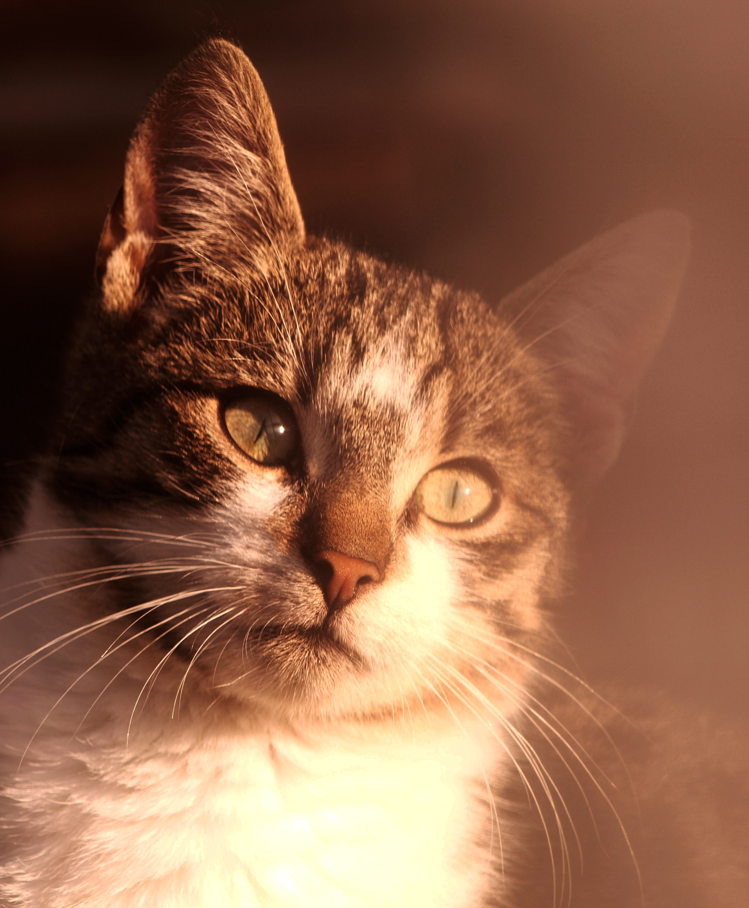

My skills are very basic and mostly like the other students in my class. I have skills in photoshop, sketchup, coding, and even illustrator. In illustrator we get to make computer art a little different from photoshop. Coding is where we can make websites or even games. Outside of school I used to play football and I still have some skills from that. I can also ride bikes and do a couple of tricks on them to.
 Branko Stancevic
Branko Stancevic
In my free time I can do many things. Sometimes I go outside to hang out with a group of friends, work on bicycles so their fixed, or I might sometimes just play games at home with my dad. I like to also read and collect comic books that I buy from book stores or I can draw from the comic books to.
 Barn Images
Barn Images
I am most interested in riding motorcycles or fixing parts of something mechanical. I also like to build things with instructions to guide me to build a bigger object. This could be like legos or a hard project that my dad gives me from his job. I can also be intrested in riding sport cars or muscle cars, this could be like a corvette c6 or a mustang GT500.

In my family I am an only child. My mom and my dad separated so I go back and forth between them. My mom is Filipino and my Dad is Irish and Scottish. This makes me a mix of Irish, Scottish, and Filipino and also a few other races that dont matter as much. I also have dogs and a cat but they dont get along well in the house and they fight ever so often. At my moms side we always have partys over there or some type of celebration. At my dad we just have a normal life but all of my friends live near my dad so I hang out with them most of the time.
 Alicja Koczaska